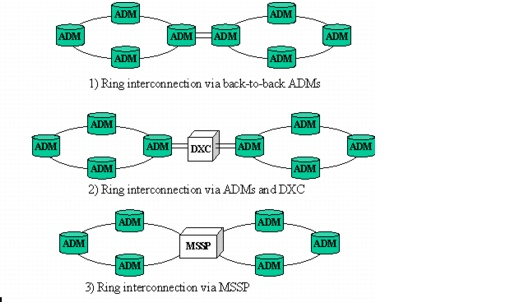

Concepts and Models > Node Modeling Capabilities in SP Guru Transport Planner > SONET Nodes: ADM
SONET Nodes: ADM
A SONET ring contains Add/Drop Multiplexers (ADMs) at each node of the ring. An ADM terminates the two links of a ring in a node and allows the add/drop of local traffic and the pass-through of express traffic (transit traffic). As such, an ADM is a simple implementation of a DXC with only two trunk ports and a number of tributary ports sufficient to add or drop local traffic. When multiple rings are passing through the same physical node, the node contains an ADM for each ring.
Figure 2-15 Ring Interconnection

Rings can be interconnected in several ways (Figure 2-15):
- First, the rings can be interconnected in a back-to-back ADM configuration in which the tributary ports of the one ADM are hard-wired to the tributary ports of the other ADM. Such a hard-wired configuration does not offer any flexibility and is suitable for static traffic only.
- A second, more flexible, design interconnects the collocated ADMs in a node through the tributary ports of the DXC in that node.
- A third configuration integrates the functionality of the ADMs and DXC in a single device called a MSSP (Multi Service Switching Platform). The MSSP is a DXC that can terminate the ring at its trunk ports and support ring-switching capabilities.
SP Guru Transport Planner allows you to choose among these three possibilities on a per-node basis using the Node Browser in the DCL layer by right-clicking on a node and setting the Ring Interconnection option.
| Home © 1987-2007 OPNET Technologies, Inc. All Rights Reserved. This software may be covered by one or more U.S. Patents. See complete patent notice in the Legal Notices section. OPNET Support Center |